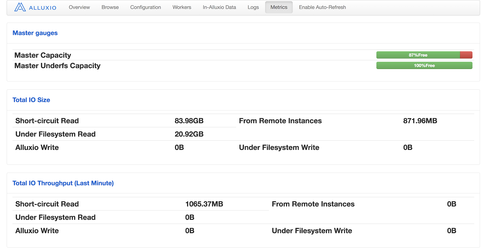

Presto + Alluxio 性能调优五大技巧
Alluxio技术博客翻译系列——Top 5 Performance Tuning Tips for Running Presto on Alluxio
本文也会发布在微信公众号“Alluxio”上，欢迎关注该微信公众号。
Presto是一个开源的分布式SQL引擎，因其查询具有低延迟、高并发性和原生支持多数据源的特点而广受认可。Alluxio是一个开源分布式文件系统，以内存速度提供统一的数据访问层。Presto和Alluxio的组合在京东、网易等许多公司中越来越受欢迎，这些公司将Alluxio构建在慢速或远程存储之上作为分布式缓存层，以便查询热数据，避免反复从云存储中读取数据。
之前的一篇博客文章中，我们已经在高层次上讨论了Presto + Alluxio数据分析技术栈的优势。本文将深入探讨Presto+Alluxio数据分析技术栈的五大性能调优技巧。如果想要了解更多关于Presto + Alluxio技术栈的信息，请在Interactive Big Data Analytics上注册Starburst和Alluxio联合网上研讨会。
关于数据本地性的注意事项
默认情况下，当Presto从远程数据源（例如AWS S3）读取数据时，其任务调度不会考虑数据位置因素，因为数据源始终都是远程的。但是当Presto与Alluxio服务同置(collocated)运行时，Alluxio可能会将输入数据缓存到Presto worker的本地，并以内存速度提供下次检索。在这种情况下，Presto可以利用Alluxio从本地的Alluxio worker存储读取数据（称之为短路读取），无需任何额外的网络传输。因此，为了最大化数据输入吞吐量，用户应确保实现任务本地性和Alluxio短路读取。
要检查是否按照预期实现了本地性和短路读取，可以在Alluxio Metrics UI页面监控Short-circuit Read和From Remote Instances这两项：

如果短路读取的百分比较低，可以使用dstat来监控Alluxio worker的网络流量模式。
1.本地性感知调度 (Locality-aware Scheduling)
为了使Presto能够利用数据本地性，可以启用本地性感知调度模式，以便Presto协调器(coordinator)可以在Presto worker上调度具有本地缓存的数据分片或数据块的任务。在config.properties中设置node-scheduler.network-topology=flat；并且如果你正使用Hive connector从Alluxio读取数据，在catalog/hive.properties中设置hive.force-local-scheduling=true。
2.确保主机名匹配
感知本地性任务调度是基于Alluxio worker的文件块地址与Presto worker地址之间的字符串匹配进行的。如果使用IP指定Presto worker地址，并使用机器主机名指定Alluxio worker地址，即便Presto worker和Alluxio worker是同置的，地址也将不匹配。为了避免这种情况，需配置alluxio.worker.hostname和alluxio.user.hostname属性，以匹配Presto worker地址的主机名。用户可以在alluxio-site.properties中设置这些属性，并在Presto的etc/jvm.config的-Xbootclasspath/p:<path to alluxio-site.properties>里设置其路径。
使用高并行度来均衡I / O和CPU负载
在开启感知本地性调度后，一旦输入数据缓存到在Alluxio中，Presto就可以从本地Alluxio存储（例如，Alluxio worker配置中的Ramdisk）直接高效地读取数据。在这种情况下，查询的性能瓶颈可能会从I/O带宽转移到CPU资源。请检查Presto worker上的CPU使用情况：如果CPU没有完全饱和，则可能表明Presto worker线程的数量可以设置地更高，或者在批处理中数据分片的数量还不够大。
3.更多worker线程
可以通过设置config.properties中的task.max-worker-threads来调整worker线程数量，典型的设置数量为CPU核数乘以Presto worker节点单核的超线程(hyper-thread)数。可能还需要调整task.concurrency来调节某些并行运算符（如连接和聚合）的本地并发性。
4.批处理中的数据分片数量
Presto会定期调度并将数据分片分配到批处理中。每个批处理的数据分片之间的调度间隙会浪费可用于查询处理的CPU周期。数据分片会处于两种状态：“待处理 (pending)”和“正在运行(running)”。将数据分片分配给Presto worker时，数据分片会处于待处理状态，然后当Presto worker线程开始处理数据分片时，数据分片会转换到正在运行状态。node-scheduler.max-splits-per-node属性控制Presto节点上待处理和正在运行的数据分片的数量上限，node-scheduler.max-pending-splits-per-task属性控制待处理数据分片的数量上限。提高这两个属性的值，可以防止Presto worker线程饥饿(starvation)并减少调度开销。请注意，如果这两个属性的值太高，则可能导致仅将所有数据分片只分配给一小部分worker，从而导致worker负载不均衡。
其他
5.防止Alluxio客户端超时
在瓶颈为网络带宽的I/O密集型工作负载下，用户可能会遇到由Alluxio 1.8中的Netty超时引起的异常，例如：
1 | Caused by: alluxio.exception.status.DeadlineExceededException: Timeout to read 158007820288 from [id: 0x73ce9e77, /10.11.29.28:59071 => /10.11.29.28:29999]. |
这是因为Presto中的Alluxio客户端未能在预设超时时间内从Alluxio worker获取数据。在这种情况下，可以将alluxio.user.network.netty.timeout增加到更大的值（例如，10分钟）。
结论
通过本文，我们总结了运行Presto + Alluxio技术栈的性能调优技巧。我们发现实现数据高度本地性和足够的并行度是获得最佳性能的关键。如果你有兴趣加速Presto工作负载中缓慢的I/O，你可以按照此文档试试！